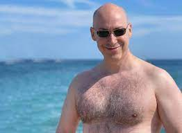
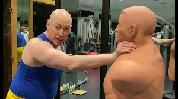

Дми́трий Ильи́ч Гордо́н (укр. Дмитро Ілліч Гордон; род. 21 октября 1967, Киев) — советский и украинский журналист, ведущий программы «В гостях у Дмитрия Гордона» (с 1996 года), главный редактор газеты «Бульвар Гордона» (1995—2019), основатель интернет-издания «ГОРДОН», обладатель двух «Золотых кнопок YouTube» за превышающее миллион количество подписчиков на его YouTube-каналах «Дмитрий Гордон» и «В гостях у Гордона», депутат Киевского городского совета (2014—2016).
За свою журналистскую карьеру Гордон записал более 1100 интервью с известными политиками, артистами, поэтами, писателями, художниками, режиссёрами, общественными деятелями, спортсменами и т. д.
В России внесён в список экстремистов и объявлен в федеральный розыск по уголовному делу.
Биография
Дмитрий Ильич Гордон родился 21 октября 1967 года в Киеве в еврейской семье. Отец Илья Яковлевич Гордон (род. 7 декабря 1936 года) — инженер-строитель, мать Мина Давидовна Гордон (10 апреля 1939 года — 31 мая 2018 года) — инженер-экономист. Дмитрий — единственный ребёнок в семье
Учился в киевских школах № 205 и № 194. По словам Гордона, в третьем классе вёл уроки по просьбе учительницы и ставил своим одноклассниками оценки в журнал. В пятом классе написал письма 100 артистам с просьбой прислать ему их фотографии с дарственной надписью. Из 100 адресатов ему ответили двое: певцы Леонид Утёсов и Иосиф Кобзон. Школу окончил в 15 лет, поскольку в шестом классе не учился: программу сдал экстерном
В 1983 году поступил в Киевский инженерно-строительный институт, факультет ПГС («Промышленное и гражданское строительство»). Все пять лет учёбы, по воспоминаниям самого Гордона, были сплошной мукой, поскольку занимался он не своим делом
По окончании третьего курса был призван в армию и отслужил два года: сначала в учебной части в посёлке Медведь Новгородской области, из которой вышел младшим сержантом, а затем под Ленинградом, в окрестностях города Луга, в ракетных войсках оперативно-тактического назначения.
Из армии пришёл кандидатом в члены КПСС, но, разочаровавшись в КПСС, вступать в партию отказался.
Карьера
Журналистика
На втором курсе института начал писать статьи в ведущие киевские газеты. Первое интервью взял в 1984 году у своего кумира — полузащитника киевского «Динамо» и сборной СССР Леонида Буряка; оно было опубликовано в ворошиловградском издании «Молодогвардієць». Первой публикацией в киевской прессе стало интервью в газете «Комсомольское знамя» с советским и украинским форвардом Игорем Белановым. За время учёбы в вузе публиковался в таких украинских газетах, как «Вечерний Киев», «Комсомольское знамя», «Молодь України», «Спортивна газета», «Радянська Україна», «Правда Украины», «Рабочая газета», «Прапор комунізму», «Молода гвардія». Также сотрудничал с «Комсомольской правдой», тираж которой превышал тогда 22 млн экземпляров. По окончании института получил распределение в редакцию газеты «Вечерний Киев». Гордон отмечал, что это было беспрецедентное решение декана, поскольку в советское время всегда распределяли по специальности
В «Вечернем Киеве» Гордон работал до 1992 года, затем перешёл в «Киевские ведомости», а после этого — во «Всеукраинские ведомости».
С июня 1995 года начал издавать собственную газету — еженедельник «Бульвар» (с 2005 года — «Бульвар Гордона»), распространяющийся на территории Украины и некоторое время в США. В «Бульваре Гордона» рекламировались услуги гадалок и ясновидящих из круга друзей Гордона, а также "золотые пирамидки «Ю-Шинсе». Гордон отмечал, что в газете выходила разная реклама, потому что изданию, чтобы существовать, нужно было зарабатывать деньги. При этом пирамиду «Ю-Шинсе» он называл официально запатентованным медицинским прибором и гениальным изобретением, с помощью которого исцелился его друг. В 2019 году Гордон покинул пост главного редактора газеты и передал её издательству ООО «Мега-пресс групп».
С 1996 года на «Первом национальном» начали выходить телеинтервью «В гостях у Дмитрия Гордона». Первым гостем стал известный украинский поэт-песенник Юрий Рыбчинский. Программа была закрыта в 2008-м из-за русскоязычного формата, не вписывавшего в лицензию телеканала, где контент на не украинском языке мог занимать 3 % эфира. Программа вернулась в 2010 году после президентских выборов. В 2015 году была закрыта по решению руководства из-за стилистических разногласий. Также программа выходила на телеканалах Tonis, ТРК «Киев» и «Центральный канал».
Творчество
Дискография
- 2006 — «А ми удвох»;
- 2006 — «Вперше»;
- 2006 — «Я улыбаюсь тебе»;
- 2006 — «Маета»;
- 2006 — «Чужая жена»;
- 2012 — «Всё ещё впереди»;
- 2014 — «Река надежды».
Видеоклипы
-
2002
- «Зима» («Плюшевый мишка») — дуэт с Натальей Могилевской;
- «Скрипка грає» — дуэт с Тамарой Гвердцители;
-
2003
- «Клетчатый» — дуэт с Александром Розенбаумом;
- «С Новым годом!»;
-
2004
- «Я улыбаюсь тебе»;
- «За Блохина!»;